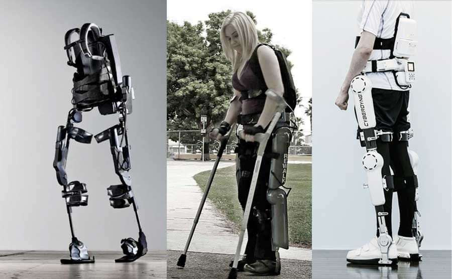

Powered Exoskeleton
Societal Benefits
How can this Technology Benefit the General Public?
The human body, no matter how conditioned it becomes, still has its limits and after a certain age, begins to deteriorate. According to the American Academy of Orothopaedic Surgeons (Effects of Aging, 2009), muscles begin to shrink and
lose mass as humans age which leads to muscles taking longer to respond while bones become fragile and joints become stiff; this natural occurrence in the human body slowly prevents people to move around as easily as they could in their younger
ages. Muscles' need for energy to produce force calls for a need to augment the muscles, as humankind ages, so that people can continue to function on their own. One such technology that will help humans solve the problem caused by aging in the
near future, is the powered exoskeleton. This super-suit of sorts would augment human muscles and joints to allow the users to over-perform in common actions such as jumping, running, and lifting heavy objects. These features would be helpful
in many fields such as medical, military, and civil services. If the powered exoskeleton were to ever be successfully created to where it operated without any limitations, the technology will greatly impact the daily lives of millions of people.
Potential Applications
- Service men such as policemen and firefighters could easily lift up heavy debris off of trap victims or remove large obstacles in the way of traffic.
- Help construction workers with hammering, drilling, or digging jobs
- People with various injuries such as back injuries, leg injuries, and arthritis can move around with ease
- Hospitals and nursing homes would be provided assistance with helping move patients and the elderly that can not move on their own
- patients could even wear bits of the suit to help with daily activities such as getting out of bed or walking down a hallway.

References